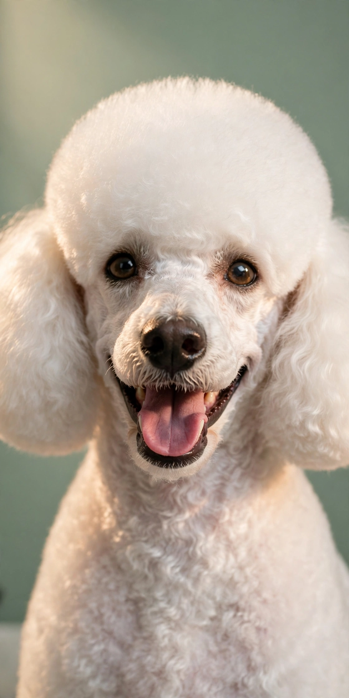
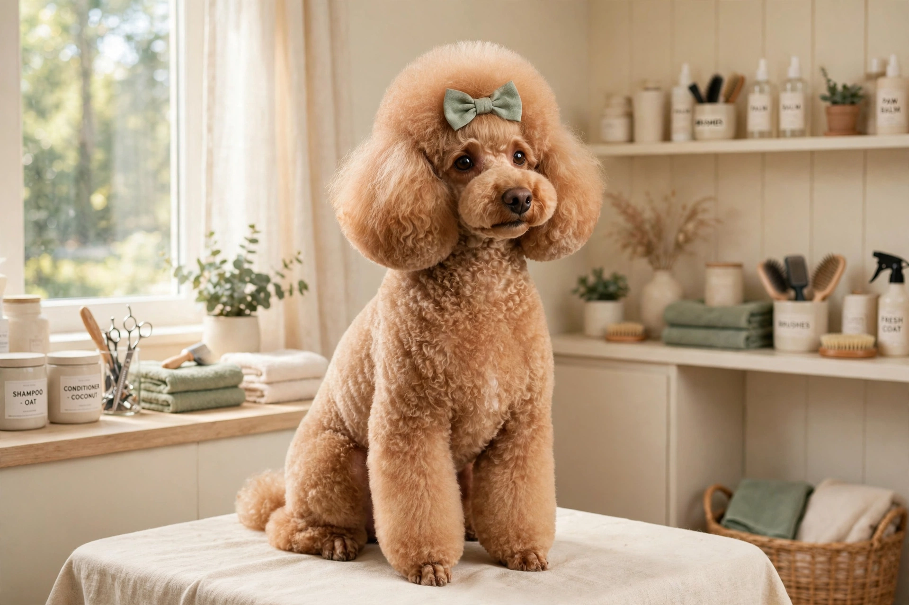
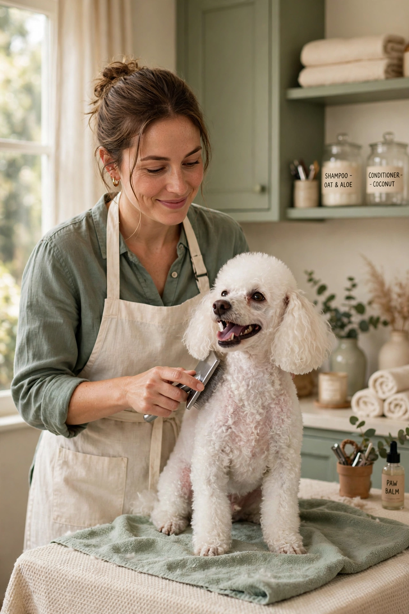
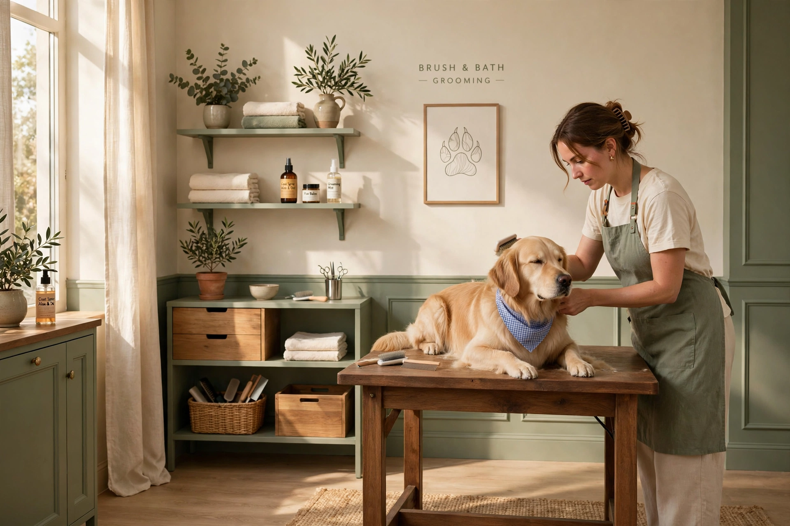

Full Groom
Bath, blow-dry, breed-style or pet clip, nails, ears and finishing touches.
From £45 (indicative)
Full menuWorcester Park’s one-to-one grooming studio
A calm, home-based salon where your dog gets the groomer’s full attention — never rushed, never caged, never one of many. Fully qualified & insured, and loved by local pups.


Pamper menu
Every appointment starts with a friendly consultation — we choose the cut, products and pace that suit your dog.
Bath, blow-dry, breed-style or pet clip, nails, ears and finishing touches.
From £45 (indicative)
Full menuA refreshing wash, fluff-dry, face-feet-sanitary trim and nail check — the in-between refresh.
From £30 (indicative)
Full menuA gentle first visit: warm bath, light dry, handling and brush practice to build happy salon memories.
From £20 (indicative)
Full menu
The grooming process
No production line and no surprises — every appointment follows the same calm rhythm, at your dog’s pace:
Every appointment starts with a friendly consultation — we agree the cut, products and pace that suit your dog’s coat, breed and temperament. Book by phone on 07876 227317 or send an enquiry.
A warm bath with coat-matched shampoo, then a gentle dry — unhurried, with your dog the only client in the room.
The groom itself: breed-style or pet clip, nails and ears, with breaks on the table or sofa in between — never a cage, never a rush.
Collect a brushed, balanced and just a little bit proud pup. We share aftercare notes and a recommended rebook date so the coat stays its best between visits.
First visit?
Everything a first-timer needs to know before the first appointment — especially if your dog is young, nervous or a rescue.
Nervous, rescue and senior dogs are warmly welcomed. Because every appointment is one-to-one in a calm, cage-free home salon, your dog sets a gentler pace — with no barking crowds around them.
Our Puppy Introduction is a gentle first visit for young pups: a warm bath, light dry, handling and brush practice that builds happy salon memories for life. See the pamper menu for details.
Please arrive with your dog walked — we’ll take it from there. Mention any coat concerns, sensitivities or quirks when you book, and your exact quote is confirmed at consultation before we begin, based on breed, size, coat condition and temperament.

The studio
Picture Pawfect is a home-based grooming salon in Worcester Park — designed around your dog, not a production line. Here’s what makes an appointment different:
Your dog is the only client in the room. No queues, no barking crowds — just calm, undivided attention from start to finish.
Dogs relax on a comfy grooming table or sofa between stages, free to settle. It keeps nervous pups — and first-timers — at ease.
Fully qualified and insured groomer, recognised by ThreeBestRated as one of the top-3 groomers in Worcester Park.
“Grooming should feel like a spa day, not a chore. Every dog leaves here brushed, balanced and just a little bit proud.”Picture Pawfect Groomers · Worcester Park
97 Mayfair Avenue
Worcester Park KT4 7SJ
United Kingdom
Mon–Wed & Fri
10:30am – 6:00pm
Thu, Sat & Sun — closed